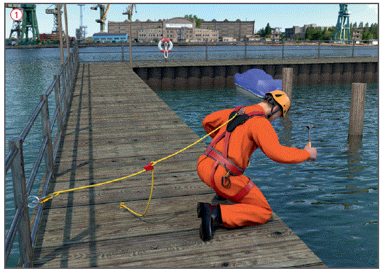
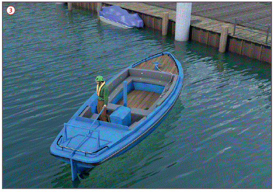

Gefährdungen
- Bei Arbeiten am und über dem Wasser können Personen hinein fallen und ertrinken.
Allgemeines
- Arbeiten auf dem Wasser nur von Wasserfahrzeugen, schwimmenden Geräten und Anlagen, Pontons und Flößen ausführen.
Schutzmaßnahmen
- An Arbeitsplätzen am und über dem Wasser Absturzsicherungen unabhängig von der Absturzhöhe vorsehen
 .
.
Rettungsmittel
- Nur geprüfte, automatisch aufblasbare Rettungswesten benutzen
 .
.
- Genormte, dem notwendigen Auftrieb entsprechende Westen benutzen (150 N oder 275 N, gemäß DIN EN ISO 12402-2 und DIN EN ISO 12402-3).
- Anlegen von Rettungswesten bei allen Arbeiten,
- bei denen ein Sturz ins Wasser möglich ist,
- an Deck, wenn keine Absturzsicherung gemäß EN 711 vorhanden ist,
- außenbords und bei Benutzung des Beibootes.
- Rettungswesten vor dem Anlegen auf Körpermaß einstellen und immer über der Kleidung tragen.

- Bei Schweißarbeiten nur Rettungswesten mit Alubedampfter Oberfläche oder Rettungswesten mit Schutzhüllen mit Widerstandsfähigkeit gegen geschmolzene Metallsplitter verwenden.
- Rettungswesten gemäß Herstellerangaben säubern, pflegen und lagern.
- Unabhängig von der Benutzung von Rettungswesten sind Rettungsstangen und Rettungsringe deutlich sichtbar und leicht zugänglich bereitzuhalten
 .
.
- Rettungsringe nach EN 14144 müssen mit einer schwimmfähigen Rettungsleine verbunden sein .
- Zusätzlich sind einsatzbereite und geprüfte Beiboote als Rettungsboote (gemäß EN 1914) bereitzuhalten
 .
.
- Rettungsboote müssen bei stark strömenden Gewässern (v > 3,0 m/s) mit einem Motorantrieb ausgerüstet sein.
Prüfung von Rettungsmitteln
- Vor jedem Anlegen einer Rettungsweste ist ein Kurz-Check durchzuführen:
- Patrone auf Unversehrtheit prüfen,
- Patrone gefüllt und handfest eingeschraubt?
- Automatik gespannt?
- Mundventil gesichert?
- Vorstehende Hinweise müssen an der Rettungsweste gut lesbar und erkennbar angebracht sein.
- Rettungsmittel sind bei Bedarf, mindestens jedoch einmal jährlich, von einer sachkundigen Person zu prüfen.
- Rettungswesten müssen unter Berücksichtigung der Herstellerangaben in festen Zeitabständen (i.d.R. im Abstand von 2 Jahren) einer Wartungsmaßnahme zugeführt werden.
- Die abschließende Überprüfung durch eine sachkundige Person ist schriftlich zu bestätigen.
- Rettungsboote sind auf vollständige Ausrüstung zu überprüfen:
- ein Satz Riemen,
- Schöpfkelle,
- Festmacher (Seil oder Draht).
07/2019